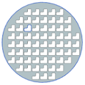
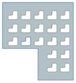
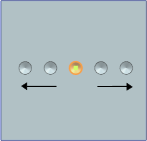
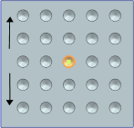
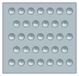
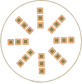
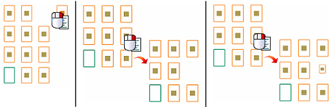
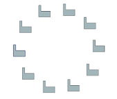
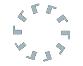

阵列特征
阵列特征
预计完成这堂课需要：8–12 分钟
使用阵列特征命令可以通过使用各种选项定义阵列边界、实例方向、旋转和变化来创建特征（线性、圆形、多边形等）阵列。
-
可以使用多种阵列布局来创建阵列特征。
 线性
线性
 圆形
圆形
多边形
螺旋式
沿
常规
 参考
参考
-
可以使用阵列特征填充指定的边界。


-
对于线性布局，可以指定在一个或两个方向对称的阵列。还可以指定多个列或行交错排列。



-
对于圆形或多边形布局，可以选择辐射状阵列。

-
通过使用表达式指定阵列参数，可以定义阵列增量。
-
可以将阵列参数值导出至电子表格并按位置进行编辑，编辑结果将传回到您的阵列定义。
-
可以明确地选择各实例点对阵列特征进行转动、抑制和变化操作。

-
可以控制阵列的方向。
方向与输入相同
方向遵循阵列(圆形)
-
可以在简单和变化阵列方法之间选择。
位于何处？
|
应用模块 |
建模和外观造型设计 |
|
先决条件 |
历史记录模式 |
|
工具条 |
特征→阵列特征 |
|
菜单 |
插入→关联复制→阵列特征 |